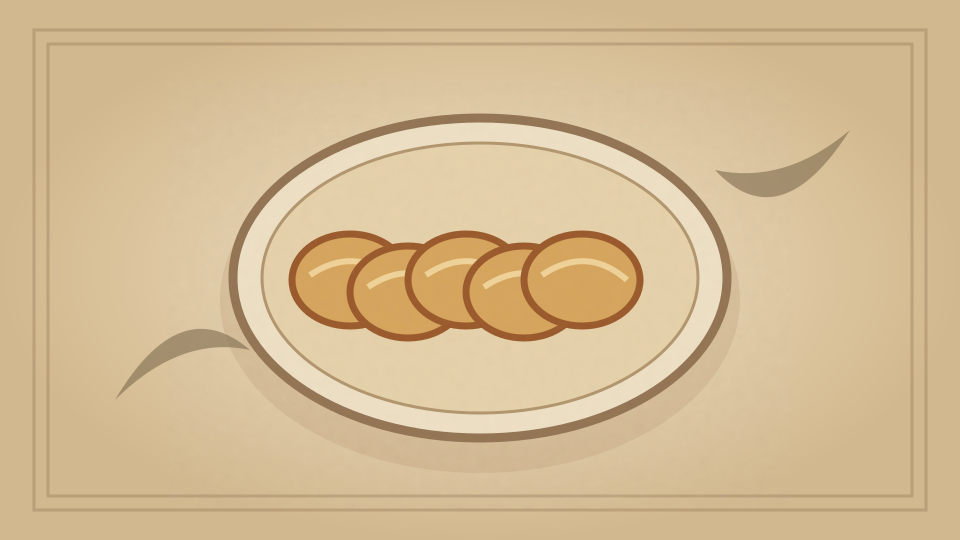

1910 · Fannie Merritt Farmer · BREAD AND BREAD MAKING
Dutch Apple Cake
The Boston Cooking-School Cook Book

Historical Recipe
The following text is extracted from the 1910 edition, retaining historical terminology and quantities.
Original Ingredients & Directions
1 cup scalded milk
⅓ cup butter
⅓ cup sugar
⅓ teaspoon salt
1 yeast cake
2 eggs
Flour
Melted butter
5 sour apples
¼ cup sugar
½ teaspoon cinnamon
2 tablespoons currants
Mix first four ingredients. When lukewarm add yeast cake, eggs unbeaten, and flour to make a soft dough. Cover, let rise, beat thoroughly, and again let rise. Spread in a buttered dripping-pan as thinly as possible and brush over with melted butter. Pare, cut in eighths, and remove cores from apples.
Press sharp edges of apples into the dough in parallel rows lengthwise of pan. Sprinkle with sugar mixed with cinnamon and sprinkle with currants. Cover, let rise, and bake in a moderate oven thirty minutes. Cut in squares and serve hot or cold with whipped cream sweetened and flavored.
Swedish Tea Ring II before baking. — Page 64 .
Swedish Tea Ring II. — Page 64 .
Raised Hominy Muffins. — Page 66 .
Pop-Overs. — Page 76 .
65 Buns
Automatically extracted transcription; editorial verification pending. Historical instructions may not meet modern food-safety standards.